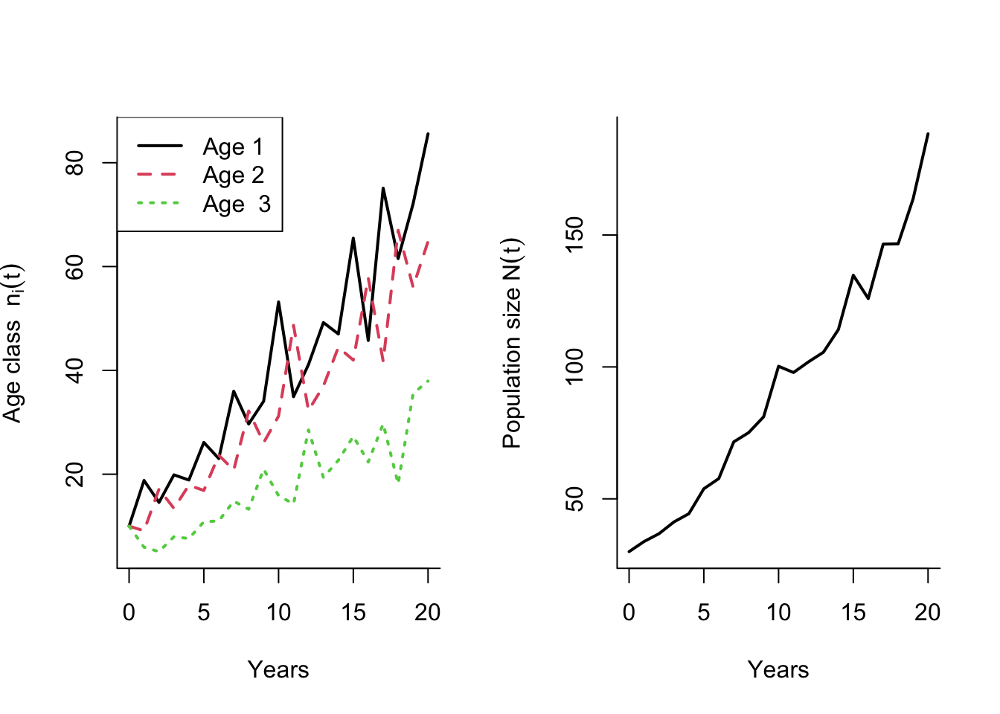
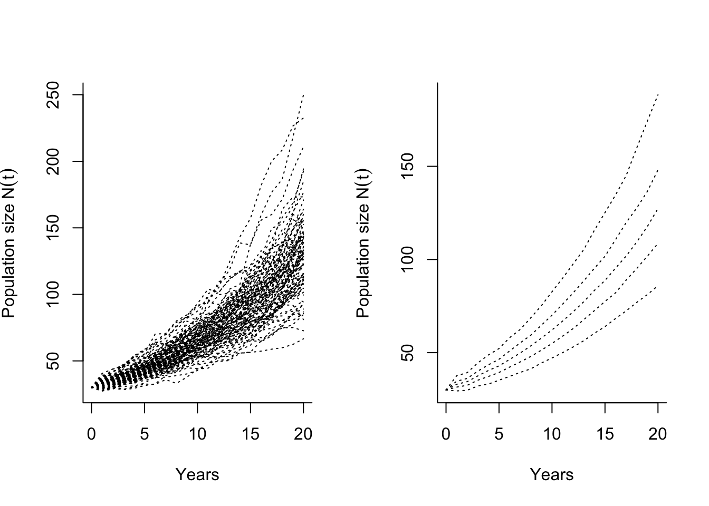

5 Stochastic environments
Learning goals
Understand key properties of population growth in stochastic environments.
Be able to describe the main properties of the Lewontin-Cohen model.
Understand the role of bet-hedging strategies for variable environments.
Discuss the role of variable and unpredictable environments in light of climate change.
5.1 What is a stochastic environment?
So far we have only considered populations in constant environments. But natural environments tend to show much variation, both in time and space. Here, ‘environment’ is a very general term which can refer to a particular abiotic variable (like temperature) or a combination of several factors that affect organisms living in the habitat, including resource availability. Environmental variability can be predictable, like the seasonal changes in light conditions at higher latitudes, or unpredictable - which is the case for stochastic environments. This also includes rare events such as rainfalls in a dessert. We can estimate a frequency at which such events typically occur over many years, but not the exact timing of each event.
Practically all organisms live in some kind of variable environment (although some habitats are more stable than others, for instance the deep depths of the oceans), and they have evolved various strategies to deal with both the wide range of possible conditions they (or their offspring) may encounter, and the unpredictability of these conditions. These adaptations allow them to mitigate the impacts during times of bad conditions, as well as take advantage of times when conditions are good. If the environment varies in a predictable way, phenotypic plasticity is an important strategy to maximize fitness. Organisms can then take advantage of environmental cues to predict and develop an optimum phenotype for the future environment. For unpredictable (stochastic) environments, however, organisms cannot rely on such cues. In thse cases bet-hedging strategies may evolve.
This section focuses on such unpredictable environments and bet-hedging, while phenotypic plasticity is covered in the lectures. The underlying theory is based on stochastic processes and probability theory, and this note will only cover a few basic concepts. A key result from the most basic model of stochastic population growth is that the long-term population growth rate in variable environments will always be lower than the growth rate in the constant mean environment. This result is also important for the theory of bet-hedging, but builds on some important assumptions.
5.2 Stochastic growth of unstructured populations
For simplicity we will assume annual time steps in the following, but the model applies to any time interval. The simplest model for stochastic population growth applies to an unstructured population, and the population growth rate each year is a stochastic variable \(\Lambda_t\) with mean \(\text{E}[\Lambda_t]=\lambda\), variance \(\text{Var}(\Lambda)=\sigma^2\), and no autocorrelation between the growth rates of different years. This means that the growth rates across years are ‘IID’, meaning ‘Identically and Independently Distributed’, and this assumption is very important for the derivation of the long-term population growth rate. This model is the Lewontin-Cohen model (Lewontin and Cohen 1969), also known as a ‘geometric random walk’.
We are interested in the long-term behavior of this stochastic process. Will the population be more likely to grow or decline over time compared to the starting point? How likely is it to go extinct? Assume that we could start the same population process from \(N_0\) many times over and look at the growth of each realization over several time steps (see the shiny app below for an example of many such realizations). The different realizations will diverge more and more from each other over time, as the randomness of the process accumulates over the years. By chance, some populations may grow to a large size, while others will decline. Many trajectories will lie somewhere in between. We are interested in describing the expected long-term growth of a typical population. It turns out that this is not the same as the growth of the expected population size.
The derivations below are slightly technical (especially if you are not familiar with stochastic variables), but the purpose is to demonstrate an important point: With stochastic population growth, the expected long-term growth is not well described by the growth of the mean population size \(\ln \text{E}[N_t]\) (on log scale). Instead we need to look at the growth of \(\text{E}[\ln N_t]\) to capture the mean long-term growth. If you are not familiar with stochastic models, you may want to take some time to explore the plots below to look at how the stochastic population trajectories behave on the absolute scale and on the log scale (growth of \(\ln \text{E}[N_t]\) and \(\text{E}[\ln N_t]\) are shown in blue and red), and how they chenge with different values of \(\lambda\) and \(\sigma^2\). The red lines represent the relevant long-term means that we are interested in. This should give you a more intuitive understanding of the process, before reading the following derivations.
You should also notice the histograms showing the distribution of the population size on absolute scale and log scale after some time. The first is skewed (approximating a lognormal distribution) while the other shows a symmetric distribution (approximating a normal distribution). The skewness in the distribution of population size means that only a few of the different runs will grow to a very large size, while most will end up at a low size. This means that the mean population size (blue line in the shiny app histogram) will be much affected by those few realisations with very high growth, and is not a good representation of the typical population. The median value (red line) is generally much lower and in this case a better measure of the typical endpoint. In the extreme case when variance is large, the expected population size can still increase exponentially while every run will go extinct with probability 1.
5.2.1 Deriving the long-term mean growth rate
We now consider the dynamics of the Lewontin-Cohen model in a bit more detail, to understand the mean growth (and growth of the mean) over the long term. Starting from a population size \(N_0\), the population size after \(t\) time steps is given by
\[\begin{align} N_{t+1}=\Lambda_{t}\Lambda_{t-1}\cdots\Lambda_{1}\Lambda_0N_0=N_0\prod_{i=0}^t \Lambda_i. \end{align}\]
Because we assumed that the \(\Lambda_t\)’s are IID (see above), the expected population size after \(t\) time steps is given by
\[\begin{align} \text{E}[N_t]&=N_0\text{E}\left[\prod_{i=0}^{t-1} \Lambda_i\right] =N_0\prod_{i=0}^{t-1}\text{E}[\Lambda_i] =N_0\lambda^t. \end{align}\]
Thus, the expected population size grows at the rate \(\lambda\) (the mean of the annual growth rate), just like a population growing exponentially in a constant environment. However, as we will see shortly, looking at the growth of the expected population size is not really useful when it comes to understanding how a typical population will grow in a stochastic environment.
We will next look at the growth on the log scale, where each growth increment is additive - this allows us to take advantage of the central limit theorem (if you need a reminder: https://en.wikipedia.org/wiki/Central_limit_theorem). On log scale, the population size after \(t\) time steps is given by
\[\begin{align} \ln N_t=\ln \Lambda_{t-1}+\ln\Lambda_{t-2}+...+\ln\Lambda_{1}+\ln\Lambda_0+\ln N_0=\ln N_0+ \sum_{i=0}^{t-1} \ln \Lambda_i. \end{align}\] Here, the first term \(\ln N_0\) is a constant (since we know the initial population size). The second term is a sum over all the stochastic growth increments on log scale. From the central limit theorem (and because of the IID assumption), we know that as the number of time steps \(t\) approaches infinity this sum will be normally distributed with mean \(t\text{E}[\ln\Lambda_t]\) and variance \(t\text{Var}(\ln\Lambda_t)\).
From this we can calculate the expected value of \(\ln N_t\):
\[\begin{align} \text{E}[\ln N_t]=\ln N_0+ \text{E}\left[\sum_{i=0}^{t-1} \ln \Lambda_i\right]=\ln N_0+ t\text{E}[\ln\Lambda_t] \end{align}\] We see that this expectation grows (or declines) linearly with time \(t\), and the slope of this line is the mean \(\text{E}[\ln\Lambda_t]=r_s\). Importantly, this value is generally lower than the mean \(r=\ln \lambda=\ln(\text{E}[\Lambda_t])\), unless the variance of the environment is zero. On absolute scale, the total population size after a large number of time steps will be lognormally distributed, which skewed so that the median is lower than the mean (see histogram in the shiny app). Thus, the typical trajectory of \(N_t\) is not well described by the dynamics of the expected population size. The expected growth rate \(r_s=\text{E}[\ln\Lambda_t]\) is often called the stochastic growth rate (but NB: This is a constant, and not a stochastic variable).
How different are the two growth rates, and can we express this difference as a function of the variance \(\sigma^2\)? Yes, Lewontin and Cohen (1969) show (using a Taylor expansion of \(\ln \Lambda_t\) around \(\lambda\); not within the scope of this course) that the stochastic growth rate \(r_S\) can be written as
\[\begin{align} r_S\approx r-\frac{\sigma^2}{2\lambda^2}. \end{align}\] This equation tells us that the difference between the growth rate \(r\) in the constant environment and \(r_S\) in the stochastic environment is increasing with the value of \(\sigma^2\). Thus, we can have cases where the population growth rate \(r\) is positive, but \(r_S\) is negative. And in that case, extinction of the population (at some point) is certain.
5.2.2 Arithmetic and geometric mean
The stochastic growth rate \(r_s=\text{E}[\ln \Lambda_t]\) and the growth rate of the mean environment \(r=\ln \text{E}[\Lambda_t])\) can also be found by considering the arithmetic and geometric mean of the annual growth rate \(\Lambda_t\). The arithmetic mean is given by
\[\begin{align} \lambda=\text{E}[\Lambda_t]=\frac{1}{t}\sum_{i=1}^t\Lambda_i, \end{align}\] and the log of this value is \(r=\ln \lambda\). The geometric mean is given by
\[\begin{align} e^{\text{E}[\ln\Lambda_t]}=\left(\prod_{i=1}^t \Lambda_i \right)^{1/t}, \end{align}\] and the log of this value corresponds to \(r_S=\text{E}[\ln\Lambda_t]\). In contrast to the arithmetic mean, the geometric mean depends on the variance \(\sigma^2\). The arithmetic mean will always be greater than or equal to the geometric mean, and in this case they are only equal in the constant environment (if \(\sigma^2=0\)).
5.2.3 Bet-hedging
From an evolutionary perspective, the Lewontin-Cohen also describes the fitness in a stochastic environment (\(r_S\)) and how it differs from that of the mean environment (\(r\)). This is therefore an important model to describe strategies of bet-hedging. Since \(r_S\) depends on both \(r\) and \(\sigma^2\), organisms in stochastic environments can improve their fitness through increasing the mean \(r\), or reducing the variance \(\sigma^2\). Bet-hedging strategies reduce the variance, at the cost of also reducing the arithmetic mean fitness. As a result the fitness in the stochastic environment \(r_S\) is optimized.
Bet-hedging can operate through two main mechanisms, or a combination:
Conservative bet hedging refers to strategies that ‘play it safe’, where the organism does not optimize its fitness for any given environment, but in the long run still come out with a higher geometric mean fitness. For instance, an bird could lay a low number of eggs at each reproduction to improve the survival of their offspring, thus reducing the variance but at the cost of a lower than optimum clutch size in the mean environment.
Diversifying bet-hedging are strategies that avoid risk by ‘not putting all eggs in one basket’, for instance by producing offspring with a high diversity of phenotypes. While this will certainly increase the variance in fitness among the offspring, it reduces the variance of the parent. Again, it is not truly bet-hedging unless the parent also pays a cost in terms of lowered arithmetic mean fitness (here corresponding to producing offspring of just one type optimal for the mean environment).
5.3 Stochastic growth of structured populations
In structured populations, studying stochastic growth is more complex because the population dynamics are no longer ‘IID’ (even if the environment is). Because of the population structure, there is a memory (autocorrelation) in the process. For instance, if the environment is particularly good for reproduction one year, this can lead to a ‘strong’ year class (cohort) that in turn affects the population growth for potentially many years as this ‘wave’ of individuals travels through the stages. Such fluctuations in the stage structure come on top of the environmental fluctuations, and create autocorrelation in the population growth process. In contrast to the population growth in a constant environment, where the transient initial fluctuations disappear over time, these transients will never disappear in the stochastic case. But the population structure will fluctuate around a stable structure (see shiny app below).
In a changing environment, the projection matrix \(\mathbf{A}\) will take a new value each time step, so that the population growth over many time steps is given by matrix multiplication from time 0:
\[\mathbf{n}_{t+1}=\mathbf{A}_{t}\mathbf{n}_{t}=\mathbf{A}_{t}\mathbf{A}_{t-1}\mathbf{A}_{t-2}\cdots\mathbf{A}_{0}\mathbf{n}_{t}\]
When these time-dependent projection matrices \(\mathbf{A}_t\) are generated by some random process each time step, we have a stochastic matrix model. There are two main approaches to study the dynamics of such a model:
The environment-blind approach generates a set of projection matrices e.g. from each year of a study, and then sample among these to generate a new stochastic sequence of matrices according to a given sampling model (e.g. a Markov process). In this case, correlation between vital rates of the projection matrix are automatically incorporated, because they are selected together.
The environment-specific approach specifies each vital rate underlying the stochastic projection matrix as a stochastic variable, which is a specific function of the environment (with approapriate scaling). Together, all the stochastic vital rates in the model define a multivariate vector with a given distribution, including potential correlations between them that can be captured by a variance-covariance matrix. This approach is more complex, but better suited to account for explicit relationships between the vital rates and environmental variables.
When a stochastic sequence of projection matrices is obtained (using either approach), the stochastic growth rate can be defined from the resulting population process as the asymptotic time-averaged growth rate
\[\begin{align} r_S=\lim_{t\to\infty}\frac{1}{t}[\ln N_t-\ln N_0], \end{align}\] This value can easily estimated from simulations, once the sequence of stochastic matrices is determined.
5.3.1 Small noise approximation
Assuming small environmental fluctuations (i.e. that no projection matrix would be very different from the mean matrix) and no environmental autocorrelations, Tuljapurkar (1982) derived the following approximation for the stochastic growth rate:
\[\begin{align} r_S&\approx r-\frac{1}{2\lambda^2}\sum_{i}\sum_{j}\sum_{k}\sum_{l}\frac{\partial\lambda}{\partial a_{ij}}\frac{\partial\lambda}{\partial a_{kl}}\text{Cov}(A_{ij},A_{kl})\\ &= r-\frac{1}{2\lambda^2}\sigma_e^2. \end{align}\]
The above expression is similar to that from the Lewontin-Cohen model, and is useful because it shows how the stochastic growth rate is related to the sensitivities of the mean projection matrix and the variances (and covariances) between matrix elements.
The concept of demographic buffering or simply ‘buffering’ refers to the observation that vital rates to which \(\lambda\) shows a high sensitivity in the mean environment often show low temporal variability. This is often seen as a strategy to mitigate negative impacts of variability, which would be most severe if it affected these vital rates that are so important to the growth in the average environment. However, because the variance of vital rates is mathematically constrained by the mean (e.g. for survival, a high mean automatically implies that the variance must be low) it is difficult to tease appart the underlying mechanisms behind an observed low variance and high mean for any given vital rate. In contrast to bet-hedging, buffering refers to any case of low variation in vital rates, without any assumption about any cost to the mean.
5.3.2 Example with R code: Stochastic growth of the bird population
We will now add some stochasticity to the bird example to look at the growth over time - the same model as shown in the shiny app above. The fertilities and survival probabilities fluctuate randomly, with no correlation between them. Because survival probabilities are restricted to be between 0 and 1, and fertilities must be non-negative, we have to be careful in how we add stochasticity to these variables. This is done by selecting appropriate scaling functions. Here we will assume a log-link function for the fertilities, and a log log link function for the survival (other kinds of functions are also possible):
\[f_{it}=\exp(\beta_{fi}+\varepsilon_{fit})\]
\[s_{it}=\exp(-\exp(-\beta_{si}-\varepsilon_{sit})))\]
The stochasticity is captured by the variables \(\varepsilon_{fi}\) and \(\varepsilon_{si}\), here assumed to follow a normal distribution with mean 0 and standard deviation \(\sigma_{i}\). The values \(\beta_{fi}\) and \(\beta_{si}\) are defined as the fertility and survival when the variances (and thus the \(\varepsilon\)’s) are zero.
To add stochasticity to the fertilities and survival probabilities in the projection matrix, we will use the function mvrnorm() from the package MASS, which generates values from the multivariate normal distribution. The function mvrnorm uses a variance-covariance matrix as one of its input variables, so we need to define this matrix first. Here, the diagonal corresponds to the variance of each vital rate in the vector, and all other elements are zero because of our assumption of no correlation between the vital rates.
The following function generates a series of random projection matrices using the mvrnorm() function. The level of stochasticity is determined by the variance vectors for the fertilities and survival probabilities, VarF and VarS (make sure that these vectors have the correct number of elements, corresonding to the given matrix model):
library(MASS)##
## Attaching package: 'MASS'## The following object is masked from 'package:dplyr':
##
## select#Split the U-matrix into transitions and survival probabilities:
MatG <- function(MatU){
k<-dim(MatU)[1]
if(is.na(MatU[k,k])){
MatU[k,k]<-0
}
Svec<-apply(MatU,2,sum)
matG <- t(t(MatU)/Svec)
for(i in 1:k){
if(Svec[i]==0){
matG[,i]<-0
matG[i,i]<-1
}
}
list("Svec"=Svec, "matG"= matG)
}
#Split the F-matrix into transitions and fertilities:
MatO <- function(MatF){
k<-dim(MatF)[1]
Omat<-matrix(0,k,k)
Fvec <- apply(MatF,2,sum) #Total fertilities each stage
for(i in 1:k){
if(Fvec[i]==0){ #If fertility is zero for a class
Omat[1,i]<-1 #Set offspring transition probability to 1 (does not matter)
}
else{
Omat[,i]<-MatF[,i]/Fvec[i]
}
}
list("Fvec"=Fvec, "matO"= Omat)
}
Stochastic.matrices <- function(MatA=leslie.bird.pre, MatU=Ubird.pre, MatF=Fbird.pre, tmax=30, VarF=rep(0.03, 3), VarS=rep(0.03, 3)){
SplitU <- MatG(MatU)#Split survival/transition matrix
SplitF <- MatO(MatF)#Split fertility matrix
Gmat <- SplitU$matG #Transition matrix
Svec <- SplitU$Svec #Survival vector
Beta.S <- -log(-log(Svec)) #Define beta for constant environment (no variance)
Omat <- SplitF$matO #Offspring transition matrix
Fvec <- SplitF$Fvec #Fertility vector
Beta.F <- log(Fvec) #Define beta for constant environment (no variance)
k <- length(Svec) #Number of matrix classes (used in for-loop)
SigMat <- diag(c(VarS, VarF))
#Draw values for each year from 1 to tmax (each column corresponds to a survival probability (from 1:k) or fertility (from k+1 to 2k)):
SFYears <- mvrnorm(tmax, mu=c(Beta.S, Beta.F), Sigma=SigMat)
#Rescale to absolute scale, the matrix then contains year-specific survival probaiblities and fertilities:
SFYears[,1:k] <- exp(-exp(-SFYears[,1:k])) #Survival probabilities (loglog link)
SFYears[,(k+1):(2*k)] <- exp(SFYears[,(k+1):(2*k)]) #Fertilities (square root link)
Smat <- Fmat <- matrix(NA, k,k)#Empty matrices to use in for-loop
#Construct one projection matrix for each year, store as array
U.array <- F.array <- A.array <- array(NA,dim=c(k,k,tmax))
for (i in 1:tmax){
Smat[,1:k] <- SFYears[i,1:k]
Fmat[,1:k] <- SFYears[i,(k+1):(2*k)]
A.array[,,i] <- t(Smat)*Gmat+t(Fmat)*Omat
}
return("Amats" = A.array)
}Using the generated sequence of stochastic projection matrices, we can project the population growth over time. This projection works exactly the same as in the constant environment, except that for each time step we now use a different projection matrix. The function below returns a list of 1) a matrix with the growth of each age/stage class over time, and 2) the corresponding vector of total population size.
project.pop.stochastic <-function(Amats = Amats.stoat, N0=c(10,10,10)){
tmax <- dim(Amats)[3]
k <- dim(Amats)[1]
Nmat <- matrix(NA,nrow= tmax+1, ncol=k)
Nmat[1,] <- N0
Ntot <- rep(NA, tmax+1)
Ntot[1] <- sum(Nmat[1,])
for(j in 1:tmax){
Nmat[j+1,]<- Amats[,,j] %*% Nmat[j,]
Ntot[j+1]<-sum(Nmat[j+1,])
}
list("Nmat"=Nmat, "Ntot"=Ntot)
}As an example, let’s plot the growth of each stage for the bird population over 20 years, starting from a population with 10 birds in each age class:
Amats.bird <- Stochastic.matrices(MatA=leslie.bird.pre, MatU=Ubird.pre, MatF=Fbird.pre, tmax=20, VarF=rep(0.03, 3), VarS=rep(0.03, 3))
stochastic.bird <- project.pop.stochastic(Amats = Amats.bird, N0=c(10,10,10))
years <- 0:20
par(mfrow=c(1,2),bty="l")
matplot(years, stochastic.bird$Nmat, type="l",bty="l", lwd=2, xlab="Years", ylab=expression(paste("Age class ", n[i](t))))
legend("topleft",c("Age 1", "Age 2", "Age 3"),lwd=2,lty=1:3,col=1:3)
plot(years,stochastic.bird$Ntot, type="l",bty="l", lwd=2, xlab="Years", ylab=expression(paste("Population size ", N(t)))) 
Instead of looking at just one realization of the stochastic growth process, it is often useful to generate multiple realizations and look at summary statistics and properties for these. The following function repeats the previous projection nsim times. The output is a matrix where the columns correspond to years, and the rows to different populations (realizations). Here the input variables are the constant matrices and variance vectors. The following code defines the function, and plots the percentiles from 1000 realizations over 20 years:
nsim.pop <- function(MatA, MatU, MatF, VarF, VarS, tmax, nsim, N0){
Nmat <- matrix(NA, ncol= tmax+1, nrow=nsim)
for (j in 1:nsim){
AMATS <- Stochastic.matrices(MatA=MatA, MatU=MatU, MatF=MatF, VarF=VarF, VarS=VarS,tmax=tmax)
Nmat[j,]<- project.pop.stochastic(Amats=AMATS, N0=N0)$Ntot
}
Nmat
}
years <- 0:20
nsim.bird <- nsim.pop (MatA=leslie.bird.pre, MatU=Ubird.pre, MatF=Fbird.pre, VarF=rep(0.03, 3), VarS=rep(0.03, 3), tmax=20, nsim=1000, N0=c(10,10,10))
bird.constant <- nsim.pop(MatA=leslie.bird.pre, MatU=Ubird.pre, MatF=Fbird.pre, VarF=rep(0, 3), VarS=rep(0, 3), tmax=20, nsim=1, N0=c(10,10,10))#Add growth in constant environment
par(mfrow=c(1,2),bty="l")
matplot(years,t(nsim.bird)[,1:100],type="l",col=1,lty=3,xlab="Years", ylab=expression(paste("Population size ", N(t))))
matplot(years,t(apply(nsim.bird,2, quantile, prob=c(.05,.25,.5,.75,.95))),type="l",col=1,lty=3,xlab="Years", ylab=expression(paste("Population size ", N(t)))) 
To estimate the stochastic growth rate \(r_S\), we can use the following function:
diffmat <- apply(log(nsim.bird),1,diff)
rS <- mean(apply(diffmat,2,mean))In this example, the stochastic growth rate is \(r_S\approx\) 0.072.
\(^1\) http://worldpopulationreview.com/countries/total-fertility-rate/